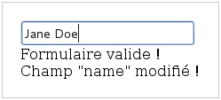

// Fonction nommée "unNom"
function unNom() { … }
// Fonction anonyme
function() { … }
// Variable pointant sur une fonction existante
var unNomVar = unNom;
// Variable pointant sur une nouvelle fonction nommée
var autreNomVar = function autreNom() { … }
// Variable pointant sur une nouvelle fonction anonyme
var anonymeVar = function() { … }
// Noms des fonctions
unNom.name === "unNom"
unNomVar.name === "unNom"
autreNomVar.name === "autreNom"
anonymeVar.name === "anonymeVar"Formation AngularJS

Formation AngularJS
Charles de MAGNEVAL
Charles.de_magneval@open-groupe.com
v1.0, 2017-12-13
https://github.com/magneval/
Plan
Plan
Rappels
Presentation AngularJS
Premiers pas
Contrôleurs et Scopes
Routeur
Modules et Services
Formulaires
Architectures REST
Plan
I18N
Filtres
Directives
Authentification
Tests
Aller plus loin
Rappels
Rappels
Dans ce chapitre nous allons voir les points suivants
Introduction
Les fonctions
La porté des variables
Piéger des Variables
Le mot clef this
le format JSon
Les outils du développeur
Les services REST
Introduction
les pages Web
le HTML
le Javascript
les CSS
Les applications Web
rendu coté serveur
rendu coté client
le principe MVC
Les fonctions
Une fonction est définie par
le mot-clé function
un nom optionnel
une liste optionnelle de paramètres entre parenthèses
un corps entre accolades
Une fonction sans nom est dite anonyme
La propriété name d’une fonction donne son nom
Les fonctions
Une fonction peut être assignée à une variable
Les fonctions
Il est possible de passer une fonction en paramètre d’une autre fonction
function appelServeur(succesFonction) {
Ajax.get(url, function(donnees) {
succesFonction(donnees);
});
}
function afficheResultat(resultat) {
alert(resultat);
}
appelServeur(afficheResultat);
// Fonction anonyme
appelServeur(function(donnees) {
alert(donnees);
});La porté des variables
La limite d’existance 'une variable est appelée scope
Visibilité des symboles au sein d’une portée
Fonctions nommées : utilisable partout dans le scope (forward-reference possible)
varVariables : le symbole existe partout dans le scope, mais sa valeur est undefined jusqu’à l’initialisationvar Variables : le symbole devient une propriété de
windowet est globalement accessible (!!)
La porté des variables
function scope() {
console.log("foo = "+foo);
console.log("answer1 = "+answer1);
var answer1 = foo();
console.log("answer1 = "+answer1);
function foo() { return 42; }
console.log("foo = "+foo);
var answer2 = foo();
console.log("answer2 = "+answer2);
if (true) {
console.log("banana = "+banana);
var banana = "banana";
console.log("banana = "+banana);
}
}
scope() ;La porté des variables
> a
ReferenceError: a is not defined
> var a; a
undefined
> (function() { var b = a; var a = 1; return b; }())
undefined
> (function() { c = 42; }())
undefined
> c
42
> window.c
42Piéger des Variables
Le moteur Javascript permet lors de l’analyse du code de "pièger" la référence une variable.
Une fonction référence le scope dans laquelle elle est déclarée pour son une utilisation future.
ce principe est appeler closure
Piéger des Variables
function additionFactory(x) {
return function(y) {
return x + y;
};
};
var ajouter5 = additionFactory(5);
var ajouter10 = additionFactory(10);
console.log(ajouter5(2)); // 7
console.log(ajouter10(2)); // 12Le mot clef this
En JavaScript this se rapporte toujours au « propriétaire » de la fonction que nous exécutons, ou plutôt, à l’objet dont la fonction est une méthode.
En tant que méthode d’un objet :
this =l’objetEn tant que constructeur ("new") :
this =l’objet créé
Il est possible de spécifier l’objet auquel
thisfait référence en utilisant la méthodecall()
Le mot clef this
function test() { alert(this); }
test(); // this = "window"
var object = { essai: test };
object.essai(); // this = object
test.call(object); // this = object
element.onclick = test; // this = element<element onclick="test()"> // this = "window"le format JSon
- JavaScript Object Notation (JSON)
format de données textuelles dérivé de la notation des objets du langage JavaScript
| extension |
|
| media type |
|
le format JSon
les données sont soit sous forme de tableaux, soit sous forme d’objets
- Tableaux
["elem1","elem2"]
- Objet
{"nom":"valeur"}
le format JSon
les sous éléments peuvent être soit
des tableaux,
des Objets,
des types de bases :
Nombre
Booléen
Chaîne
null
le format JSon
menu.json
{
"value": "file",
"menuItem": [
{ "value": "New", "onclick": "CreateNewDoc()" },
{ "value": "Open", "onclick": "OpenDoc()" },
{ "value": "Close", "onclick": "CloseDoc()" }
]
}le format JSon
- parsing original
var donnees = eval('('donnees_json')');
- version conseillé
var donnees = JSON.parse(donnees_json);
attention à la sécurité
le format JSonP
- JavaScript Object Notation with Padding (JSONP)
format de données JSON "Paddé" par une methode callback
showMenu(
{
"value": "file",
"menuitem": [
{ "value": "New", "onclick": "CreateNewDoc()" },
{ "value": "Open", "onclick": "OpenDoc()" },
{ "value": "Close", "onclick": "CloseDoc()" }
]
}
)Les outils du développeur
Il existe plusieurs moyen de débugger le JavaScript :
- avec la fonction alert
alert("Hello world");- en ecrivant dans la console
console.log("Hello world");Les outils du développeur
Tous les navigateurs récents proposent également des outils d’analyse et de débuggage, accessibles via
F12Webkit (Chrome, Safari, Opera) : Web Developer Tools
Firefox : Firebug (+ plugins)
Internet Explorer : "F12 Tools"
Il existe aussi des pluggins qui permettent de débugger depuis l’IDE
Les outils du développeur
Batarang est un inspecteur Web pour AngularJS
c’est une extention pour les outils basé sur Webkit
Il présente les scopes, les modèles et les services, et de mesurer les performances
Les outils du développeur
Les services REST
- REST (REpresentational State Transfer)
Architecture pour les systèmes hypermédia distribués
doit respecter les contraintes suivantes :
Client-serveur Sans état auto-descriptif (cachable)
l’identification et la manipulation des ressources
Un système hiérarchisé par couches hypermédia
Code-on-demand (facultatif)
Les services REST
L’architecture REST s’appuie sur le protocole HTTP :
L’URL definie l’organisation des ressources
les méthodes HTTP definisse les action à mener :
GET:: Liste ou Récupére des ressources
POST:: Crée une nouvelle ressources
PUT:: remplace une ressource exixtente
DELETE:: suprime une ressource
Les services REST
- HATEOAS (Hypermedia As The Engine Of Application State)
Hypermédia en tant que moteur de l’état d’application
Le type de contenu est négocié entre le client et le serveur (XML, JSON, YAML, Texte, CSV, Objets, …)
les liens vers les autres ressources peuvent faire partie de la réponse
basé sur les standards ( XHTML Friends Network, Atom, RDF, …)
apporte de la sémantique aux ressources
Les services REST
GET /accounts/12345 HTTP/1.1
Host: my.bank.com
Accept: application/xmlHTTP/1.1 200 OK
Content-Type: application/xml
Content-Length: ...Les services REST
<?xml version="1.0"?>
<account>
<account_number>12345</account_number>
<balance currency="usd">100.00</balance>
<link rel="Contents" href="https://my.bank.com/accounts/" />
<link rel="deposit"
href="https://my.bank.com/accounts/12345/deposit" />
<link rel="withdraw"
href="https://my.bank.com/accounts/12345/withdraw" />
<link rel="transfer"
href="https://my.bank.com/accounts/12345/transfer" />
...Rappels
des questions

Rappels
Dans ce chapitre nous avons vu les notions de suivantes
Introduction
Les fonctions
La porté des variables
Piéger des Variables
Le mot clef this
le format JSon
Les outils du développeur
Les services REST
AngularJS
AngularJS
Dans ce chapitre nous allons voir les points suivants
Présentation
Points forts
Utilisation
Les Concepts
Forces
Faiblesse
AngularJS
| Développé par | |
| Versions | 1.2.32 (legacy) ou 1.6.6 (stable) |
| Site | |
| Code | |
| Documentation |
AngularJS
AngularJS est un framework "full stack" :
il intègre l’ensemble des composants nécessaires à la réalisation d’applications richesRoutage par URL (deep-linking)
Contrôleurs Javascript
Templates HTML
Directives (composants personnalisés)
Gestion des ressources REST
IOC
Tests unitaires et de bout en bout
…
Points forts
Javascript pur
Adhérence technique limitée, réactivité de l’interface
Deep-linking
Les URLs des "pages" de l’application peuvent être bookmarkées
Testabilité
Possibilité de jouer des tests unitaires ou de bout en bout
Binding automatique
Binding automatique et bi-directionnel entre les placeholders des vues, et avec le modèle du contrôleur
Cas d’utilisation
Utilisable
Localement pour rendre dynamique un fragment de page
templating, composants…Globalement pour structurer une application full-Javascript MVC2 (routage, contrôleurs, templates, ressources REST…)
Aussi simple ou complexe que nécessaire !
concepts :
Contrôleur
Contrôleur
Fonction Javascript contenant les données et la logique d’affichage relatives à un
scopePeut accéder à toutes les variables déclarées dans le contrôleur ou dans la vue gérée par le contrôleur
concepts :
Service
Service
Comme son équivalent côté serveur, un service Angular représente un ensemble cohérent de fonctionnalités
Le module ng fournit un grand nombre de services $document, $http, $location, $parse, $route, $window…
Ce sont des singletons, injectés par IOC dans les contrôleurs
concepts : Directive
Directive
Une directive encapsule du code et/ou de la logique d’affichage qu’on associe à une balise ou un paramètre dans la page
Cela permet de créer des composants auto-contenus et réutilisables
Bibliothèque de widgets prêts à l’emploi
Handlers génériques pour certains événements
concepts :
Filtre
Filtre
Un filtre est un composant permettant d’appliquer des transformations de données de manière déclarative directement dans la vue
Mettre en forme des dates, des montants
Filtrer ou ordonner une liste
concepts : Module
Module
Groupement logique de services, contrôleurs, directives et filtres
Configure également le mécanisme d’IOC permettant de les injecter dans les différents composants de l’application
On peut utiliser seulement le module par défaut, ou utiliser un module spécifique (toutes les applications non-triviales)
Un module peut dépendre d’autres modules
Ex: myApp → myServices → ngResource
concepts :
Ressource
Ressource
Permet d’accéder à une ressource serveur exposée en REST
Fournit des opérations de type CRUD (Create, Read, Update, Delete) par défaut, et autorise la création d’actions personnalisées
Forces
Framework complet
Peu intrusif
Bonne documentation / Tutoriaux
Architecture (Injection de dépendances, MVC)
Templates (HTML)
Faiblesses
Conclusion
LE framework par excellence pour les applications “single page” (porté par Google) et également un compagnon idéal pour l’intégration dans des applications “page par page” (très peu intrusif)
AngularJS
des questions
AngularJS
Dans ce chapitre nous avons vu les notions de suivantes
Présentation
Points forts
Utilisation
Les Concepts
Forces
Faiblesse
Premiers pas
Premiers pas
Dans ce chapitre nous allons voir les points suivants
L’intégration
L’activation
Les templates
Le binding
Les modèles
Les listes
Les filtres
Les directives
Intégration
Avant de pouvoir utiliser AngularJS, il faut l’importer
AngularJS est composé de plusieurs scripts, soit en version développement ou minifiée (production)
angular.js, angular-resource.js, angular-mocks.js…
Permet d’optimiser le chargement de l’application
A déclarer de préférence à la fin de la page HTML
<html>
<head>
<script src="angular.js"></ script>
</head>
<body>...</body>
</html>Activation
Une fois AngularJS importé, il faut l’activer dans la page
Directive
ng-appGénéralement placée sur la balise
<html>ou<body>
<html ng-app>
...
</html>Il est également possible de charger un module personnalisé (CF. le chapitre sur les modules)
<html ng-app="myModule">
...
</html>Templates et Bindings :
Template
Un template est un modèle de document
Page complète ou fragment
Complété par des bindings et/ou directives AngularJS
Doit être valide au sens HTML5 (data-…,CSS)
des bindings permettent d’indiquer les éléments dynamiques
Lié à un modèle défini sur un scope
Plusieurs notations disponibles
Templates et Bindings : Bindings
Plusieurs notations possibles pour un binding
Placeholder à accolades
Hi {{name}}Attribut de balise
Hi <span ng-bind="name"></span>Hi <span data-ng-bind="name"></span>Classe CSS
Hi <span class="ng-bind:name"></span>Templates et Bindings :
Cloaking
Les bindings de type
{{name}}peuvent être aperçus par l’utilisateur pendant une instant avant qu’AngularJS ne les remplace par leur valeurSolutions
Utiliser les autres formes de binding
Utiliser
ng-cloaksur une balise parente pour la masquer temporairement
Templates et Bindings :
Cloaking
<div data-ng-cloak>
Hello {{name}}
</div><div class="ng-cloak">
Hello {{name}}
</div>Templates et Bindings :
Autres types de bindings
Autres types de bindings
ng-bind-htmlInterprètent le binding comme du code HTML et supprime les éléments dangereux (voir $sanitize)
<span data-ng-bind-html="comment"></span>Templates et Bindings :
Autres types de bindings
ng-bind-templatePermet de fournir un template, dans les cas où il est impossible de placer des
<span>(ex : dans<title>)
<title data-ng-bind-template="{{site}} - {{page}}"></title>Templates et Bindings :
Les modèles
Pour définir un modèle sur le scope courant (pour l’instant, le scope racine
$rootScope)ng-initGénéralement placé sur la balise body
<body ng-init='name="Charles"'>ng-modelUtilisable sur les balises de formulaireinput, select, textarea
<input type="text" ng-model="name"/>
Hello {{name}} !Gestion des listes
La directive
ng-repeatpermet d’afficher des listes (appliquer sur l’élément à répéter)
<ul>
<li ng-repeat="name in names"> {{name}} </li>
</ul>Fonctionne également avec des maps
<ul>
<li ng-repeat="(name,age) in people">
{{name}} is {{age}}
</li>
</ul>Gestion des listes
La boucle expose différentes variables
$index(nombre) : index de l’élément courant (0..N-1)$first(booléen) : si c’est le premier élément$middle(booléen) : si c’est un élément intermédiaire$last(booléen) : si c’est le dernier élément
Exemple : combinaison avec
ng-show/ng-hide
<span ng-repeat="name in ['you','me','them']">
{{name}}
<span ng-hide="$last">,</span>
</span>
// you, me, themFiltres
Un filtre permet d’altérer la valeur d’un binding
AngularJS en fournit un certain nombre, et il est possible de développer ses propres filtres
lowercase, uppercase,
number, date, currency
filter, limitTo, orderBy
json
Syntaxe
{{ expression | filtre1 | filtre2:param1:param2 }}Filtres
<ul ng-init="people=[{name:'you'},{name:'me'},{name:'them'}]">
<li ng-repeat="p in people | orderBy:'name'">
{{p.name | uppercase}}
</li>
</ul>Filtres
<input type="text" ng-model="nameFilter"/>
<ul ng-init="names=['you','me','them']">
<li ng-repeat="name in names | filter:nameFilter">
{{name}}
</li>
</ul>Figure 1. sans Filtre
Figure 2. avec Filtre
Quelques directives utiles (1/3)
ng-styleApplique un style CSS à l’élément :
ng-style="myStyle"
myStyle = {
color:'red',
margin:0
}ng-classModifient la classe CSS de l’élément soit :
par un nom de classe
par une pair classe/condition
Quelques directives utiles (2/3)
ng-href/ng-srcGarantissent que les attributs href et src ayant des placeholders
{{commande}}
ng-show/ng-hideAffiche ou masque l’élément en fonction d’une expression
ng-includeCompilation et ajout d’un fragment HTML externe
Quelques directives utiles (3/3)
ng-ifAjout ou suppression d’une partie du DOM en fonction d’une expression
A la différence des directives
ng-show/ng-hide, les éléments HTML sont recréés plutôt simplement masqués
ng-switchLa directive s’appuie sur le pattern on/when/default
Ajout d’une structure DOM parmi plusieurs possibles en fonction d’une expression.
Premiers pas
TP N°1 Afficher une liste dans la page web à partir des éléments d’un tableau JavaScript
Premiers pas
des questions
Premiers pas
Dans ce chapitre nous avons vu les notions de suivantes
L’intégration
L’activation
Les templates
Le binding
Les modèles
Les listes
Les filtres
Les directives
Contrôleurs et Scopes
Contrôleurs et Scopes
Dans ce chapitre nous allons voir les points suivants
Les contrôleurs
Les scopes
$apply
$watch
Contrôleurs
AngularJS promeut le pattern MVC, pour découpler les données de la façon dont elles sont affichées
Permet de tester les algorithmes en isolation
Permet de varier les représentations (web, mobile, graph, …)
Contrôleurs
Une application AngularJS est généralement composée
De contrôleurs en Javascript : Javascript est un langage impératif, idéal pour implémenter les traitements métiers
De templates (vues) en HTML : HTML est un langage déclaratif, pratique pour exprimer une mise en forme. Pour des raisons de performance, AngularJS compile le template sous la forme d’un arbre DOM, et utilise ce dernier pour appliquer les transformations.
Contrôleurs
Un contrôleur AngularJS encapsule un modèle de données et les opérations qui agissent sur ce modèle
Comme un prototype Javascript ou un objet Java/C#
Développé en pur Javascript
Modèle et fonctions peuvent être associés au
$scopefourni par AngularJS en paramètre du contrôleur
angular.module('myApp', [])
.controller('PeopleController', function($scope) {
$scope.names = ['you', 'me', 'them'];
$scope.add = function () {
$scope.names.push('others');
};
}
);Contrôleurs
Pour afficher les données et appeler les fonctions du contrôleur, il faut l’associer à un template, qui peut être
Une page entière
Une vue, dans une application de type single-page
Une zone délimitée par une balise (exemple un
<div>)
Directive
ng-controller
<div data-ng-app="myApp">
<ul ng-controller="PeopleController">
<li ng-repeat="name in names">{{name}}</li>
</ul>
<button ng-click="add()">add</button>
</div>Contrôleurs
Le scope du controlleur peut maintenant être assicié directement au controlleur
angular.module('myApp', [])
.controller('PeopleController', function() {
this.names = ['you', 'me', 'them'];
this.add = function () {
this.names.push('others');
};
}
);Contrôleurs
on peut associer un nom au controlleur avec le mot clef as
ng-controller="PeopleController as peoples"
l’utilisation u svope du controlleur se fait en le référencent
<div data-ng-app="myApp">
<ul ng-controller="PeopleController as peoples">
<li ng-repeat="name in peoples.names">{{name}}</li>
</ul>
<button ng-click="peoples.add()">add</button>
</div>Scopes :
Principes
Dans une application AngularJS, plusieurs scopes peuvent cohabiter
Le scope de l’application (scope racine ou
$rootScope)Les scopes des contrôleurs
Les scopes des directives
Des scopes dynamiques (ex : au sein d’un
ng-repeat)
Scopes :
Principes
Les scopes héritent de leurs scopes parents
Permet d’architecturer l’application sous forme de modules isolés mais partageant un référentiel commun
Batarang (plugin pour Chrome) permet de visualiser l’imbrication et le contenu des différents scopes
Scopes : Visualisation avec Batarang
Scopes : Debug
Pour voir ou modifier le scope depuis son navigateur
Inspecter un élément du DOM, puis taper depuis la console :
- Google Chrome / Batarang
$scope- Firefox / Firebug
angular.element($0).scope()ou`$($0).scope()`
Scopes : Fonctionnement
Toute la magie d’AngularJS vient de sa gestion des scopes

Scopes : Fonctionnement
Un événement natif est déclenché dans le navigateur
La fonction callback associée est transférée dans l’univers AngularJS à l’aide de la fonction
$applydu scopeAngularJS "digère" la fonction
Il applique les modifications requises au modèle
Ces modifications sont détectées par la méthode
$watch, et peuvent déclencher d’autres modifications en cascadeCe cycle se répète jusqu’à ce que le modèle se stabilise
Scopes :
Fonctionnement
Les nouvelles valeurs du modèle sont appliquées au template
Enfin, le navigateur peut afficher le DOM mis à jour
Scopes :
$apply
Lorsque l’événement est généré par une balise gérée par AngularJS, il passe automatiquement par $apply
Par exemple: ng-model sur un champ
<input>Utiliser
$applyuniquement depuis du Javascript pur ou des librairies tierces
En debug, n’oubliez pas lors de modification de scope de prévenir Angular en invoquant le
$applysur le scope :.$apply()
Scopes :
$apply
Pour appeler
$applymanuellement (depuis un framework tiers par exemple), il faut récupérer une référence sur le scopePar injection depuis un composant AngularJS
Ou en utilisant les API AngularJS
var element = document.getElementById( … );
var scope = angular.element(element).scope();
scope.$apply(function() { … });Scopes :
$apply
.controller('PeopleController', function() {
this.names = ['you', 'me', 'them'];
}<div ng-controller="PeopleController as peoples">
<ul>
<li ng-repeat="name in peoples.names">{{name}}</li>
</ul>
<button onclick="
var scope = angular.element(this).scope();
scope.$apply(function() {
scope.peoples.names.push('others');
});"
>more</button>
</div>Scopes :
$watch
La méthode
$watchpermet de surveiller un champ du scopeAngularJS utilise la technique du "dirty-checking" pour n’appeler l’observateur qu’en cas de réelle modification
2 modes de comparaison :
by-reference (égalité stricte des références) ou
by-value (comparaison des valeurs des champs)
Scopes :
$watch
.controller('PeopleController', function($scope) {
$scope.names = ['you', 'me', 'them'];
$scope.$watch('names', function(newValue, oldValue) {
console.log(oldValue + " → " + newValue);
}, false);
}Contrôleurs et Scopes
TP N°2 Utiliser un controlleur pour afficher la liste dans la page web et pouvoir ajouter un élément
Contrôleurs et Scopes
des questions
Contrôleurs et Scopes
Dans ce chapitre nous avons vu les notions de suivantes
Les contrôleurs
Les scopes
$apply
$watch
Routeur
Routeur
Dans ce chapitre nous allons voir les points suivants
Le routage
La configuration
Les routeParams
Les URLs
La barre d’adresse
Routeur
AngularJS permet de faire des applications multi-vues
Routeur
Dans la page hôte, la directive
ng-viewindique l’emplacement où les vues seront inséréesArchitecture MVC côté client en pur Javascript
<body>
<div>
<h1>Gestion des Commandes</h1>
<h2>Taking care of your people, one at a time.</h2>
</div>
<div ng-view></div>
</body>Configuration du routage
Le service
$routeProviderpermet de paramétrer la table de routage, qui associe des vues à des URLs particulièreswhen(route, config) : configure une route
otherwise(config) : si aucune route ne correspond
Configuration du routage
Propriétés usuelles de configuration d’une route
controller : nom du contrôleur gérant la vue
templateUrl : chemin vers la vue (template)
redirectTo : URL vers laquelle rediriger l’utilisateur
Configuration du routage
Il existe d’autres possibilités de configuration
En particulier, on peut associer des propriétés personnalisées aux routes
(ex : pour donner un titre de page à chaque vue)
var app = angular.module('app',['ngRoute']);
app.config(function($routeProvider) {
$routeProvider.when('/login', {
templateUrl: 'view/login.html',
controller: 'LoginController'});
$routeProvider.when('/commandes', {
templateUrl: 'view/commande.html',
controller: 'CommandeController',
title: 'Consultations des commandes' });
( … )
$routeProvider.otherwise({
redirectTo: '/commandes'});
});Configuration du routage
Il est également possible de spécifier des patterns d’URL
$routeProvider.when(
'/carnetCommande/:carnetId/commande/:id', {
templateUrl: 'view/commande.html',
controller: 'CommandeController'});Le service
$routeParamspermet alors d’accéder aux valeurs des placeholders
$routeParams.carnetId
$routeParams.idles routes peuvent avoir plusieurs niveaux de paramétrages
Configuration du routage
La configuration de routage est exposée par le service
$routeroutes configurées :
$route.routespropriétés de la route courante :
$route.current(y compris les propriétés personnalisées)
$route.current.titleConfiguration du routage
Le service
$routeexpose également différents événements$routeChangeStart,$routeChangeSuccess,$routeChangeError,$routeUpdate
Configuration du routage
function CommandeController($scope,$route) {
$scope.$on('$routeChangeSuccess', function() {
console.log("route changed");
});
}Format des URLs
Mode par default
http://server:port/gestion_commandes/index.html#!/list?a=b&c
AngularJS fait usage du caractère # ("Hash" en anglais) qui permet de modifier l’URL sans déclencher un rechargement de la page par le navigateur
Il existe également un mode HTML5 qui se base sur l’API History HTML5 mais qui demande alors une gestion coté serveur des URL (URL rewriting)
Gestion de la barre d’adresse
Le service
$locationpermet de lire et de modifier l’URL dans la barre d’adresse du navigateurAbstraction de
window.locationSynchronisation bidirectionnelle
Accesseurs
[ro]
protocol(),host(),port()[rw]
path(),search(),hash()[rw]
url()= path + search + hash[ro]
absUrl()= URL complète
Routeur
TP N°3 Mettre en place des vues pour voir soit la liste soit le détail des commandes
Routeur
des questions
Routeur
Dans ce chapitre nous avons vu les notions de suivantes
Le routage
La configuration
Les routeParams
Les URLs
La barre d’adresse
Modules et Services
Modules et Services
Dans ce chapitre nous allons voir les points suivants
La notion de module
Déclarer un module
La configuration
Les Factories
Service V Factory
Le paramétrage
L’IOC
Modules : Notion de module
AngularJS propose la notion de module
Un module permet d’encapsuler un ensemble de fonctionnalités
Code de configuration
Services, contrôleurs, directives et filtres
Modules : Notion de module
Avantages
Architecture modulaire
Réutilisabilité
Testabilité (module de test, module de production)
Le module ng fournit toutes les fonctionnalités vues jusqu’ici
Automatiquement importé
Modules : Notion de module
De manière générale, les modules peuvent être organisés
Par type (services, contrôleurs…)
Par fonctionnalité ("gestion des commandes", "admin"…)
On peut par exemple utiliser le découpage suivant
Un module par type de composant (services, contrôleurs…)
Un module applicatif qui importe les précédents, ainsi que les modules tierce-partie
Modules : Notion de module
Modules : Déclarer un module
La fonction
angular.modulepermet de déclarer un module
var Foo = angular.module('Foo', []);Exemple
var Services = angular.module('Services', []);
var Controllers = angular.module('Controllers', []);
var MyApplication =
angular.module('Application',
['Services','Controllers']
);Modules : Configuration
La directive
ng-apppermet de spécifier le module applicatif
<html ng-app='Application'>Modules : Configuration
Un module dispose de deux fonctions d’initialisation
config(): appelée au chargement du modulerun(): appelée lorsque tous les modules ont été chargés
Utile pour configurer l’application au démarrage (ex : le routage des URLs vers les vues)
Modules : Configuration
var App = angular.module('App', []);
App.config(function() {
console.log('Chargement...');
});
App.run(function() {
console.log('Initialisation...');
});Modules et Composants : Factories
Un module instancie et expose des composants (services, contrôleurs, directives et filtres) grâce à des fonctions factory
service(name, configFn)controller(name, configFn)directive(name, configFn)filter(name, configFn)
Modules et Composants : Factories
Exemple : déclaration d’un contrôleur
var Controllers = angular.module('Controllers', []);
Controllers.controller('PeopleCtrl', function($scope) {
$scope.names = ['you', 'me', 'them'];
$scope.add = function () { … };
});Modules et composants : service() vs factory()
Il existe une méthode alternative pour créer un service
Méthode
<module>.factory(nom, configFn)Permet d’exécuter du code avant d’instancier le service
Différences
Avec
service(), this fait référence à l’instance du service en cours de création.Avec
factory(), il faut instancier manuellement le service et retourner la nouvelle instance. this fait référence au module.
Modules et composants : service() vs factory()
Avec
module.service()
<module>.service('PeopleSrvc', function() {
this.foo = 42;
this.bar = function() { … };
});Avec
module.factory()
<module>.factory('PeopleSrvc', function() {
var instance = {};
instance.foo = 42;
instance.bar = function() { … };
return instance;
});Modules : Valeurs
Pour finir, un module peut exposer des valeurs
Réutilisabilité, principe DRY
Injectables dans les composants
Utilisation de la fonction factory
module.value
<module>.value('Answer', 42);
<module>.service('Q', function(Answer) {
this.answerMe = function(anyQuestion) {
return Answer;
}
});Injection de dépendances
AngularJS propose un mécanisme d'injection de dépendances
Principe : un composant ne va pas chercher lui-même ses dépendances, mais attend qu’on les lui fournisse
Aussi appelé IOC (Inversion Of Control)
Avantages
Simplifie le code
Permet de varier les implémentations d’une dépendance (production vs mock)
Injection de dépendances : Injection dans un module
Dans le cas d’un module
Les dépendances envers les autres modules sont déclarées dans le tableau des dépendances
Les fonctions d’initialisation
runetconfigacceptent également des dépendances en paramètre
// dépendance envers les modules annexes Services et Controllers
var App = angular.module('App', ['Services','Controllers']);
// injection du service $routeProvider
App.config(function($routeProvider) {
$routeProvider.when(…);
});Injection de dépendances : Injection dans un service, contrôleur…
Dans le cas des services, contrôleurs, filtres et directives, les dépendances sont déclarées comme des paramètres de la fonction de configuration
Services.service('PeopleSrvc', function() {
…
});
// le $scope des contrôleurs est également une dépendance
// injectée !
Controllers.
controller('PeopleCtrl', function($scope, PeopleSrvc) {
…
});Injection de dépendances : Minification et obfuscation
AngularJS se base sur le nom du paramètre pour déterminer la dépendance à injecter
Nom défini lors de son instanciation par le module
Injection de dépendances : Minification et obfuscation
| en cas de minification et/ou obfuscation du code, les variables, fonctions et paramètres sont renommés ! |
Avant
ControllersCtrls.controller('PeopleCtrl', function($scope) {
(...)
});Après
var$21.func$33('PeopleCtrl', function(param$13) {
(...)
});Injection de dépendances : Minification et obfuscation
Solution : une notation alternative permet de préciser les dépendances sous forme de String
Les Strings ne sont pas minifiées ni obfusquées
Utilisation d’un tableau
Les N premiers éléments sont les noms des dépendances
Le dernier élément est la fonction de configuration
L’ordre des noms doit correspondre à celui des paramètres
Injection de dépendances : Minification et obfuscation
<module>.controller('MyCtrl',['foo','bar',function(foo,bar){
foo.(…);
bar.(…);
}]);Modules et Services
TP N°4 Mettre en place un service pour fournir et stocker les commandes
Modules et Services
des questions
Modules et Services
Dans ce chapitre nous avons vu les notions de suivantes
La notion de module
Déclarer un module
La configuration
Les Factories
Service V Factory
Le paramétrage
L’IOC
Formulaires
Formulaires
Dans ce chapitre nous allons voir les points suivants
Le Principe général
Les type de champs
Le fonctionnement
La validation des champs
L’état du formulaire
Formulaires :
Principe général (1/4)
Principe général de gestion des formulaires
Formulaire classique HTML
Désactiver le mécanisme de validation natif du navigateur
Associer des champs de saisie à des propriétés du scope grâce à la directive
ng-modelAppeler une méthode du scope pour traiter le formulaire en Javascript
Formulaires :
Principe général (2/4)
Désactivation du mécanisme de validation natif du navigateur
La validation sera effectuée par AngularJS
Attribut
novalidatesur le formulaireAttribut standard HTML5
<form novalidate>
…
</form>Formulaires :
Principe général (3/4)
Association des champs de saisie à des propriétés du scope grâce à la directive
ng-model
<input type='text' ng-model='contact.name' />Association du formulaire à une propriété du scope
Attribut
nameUtile pour la validation
<form name="contactForm" novalidate>
…
</form>Formulaires :
Principe général (4/4)
Appel d’une méthode du scope pour traiter le formulaire
ng-submitsur le formulaire + bouton "submit"
<form ng-submit="saveForm()" novalidate>
<input type="submit"/>
</form>ng-clicksur un bouton simple
<form novalidate>
<button ng-click="saveForm()" />
</form>Formulaires : Types de champs
AngularJS gère les types de champs de saisie habituels
input[text],input[radio],input[checkbox], …selecttextarea
Formulaires : Types de champs
Ainsi que certains des nouveaux types introduits par HTML5
input[email],input[number],input[url]…
Il est possible de créer ses propres types de champs
Directive personnalisée
Formulaires : Exemple
<form novalidate>
Title :
<input type="radio" ng-model="contact.title" value="Mr"/>Mr
<input type="radio" ng-model="contact.title" value="Ms"/>Ms
Name :
<input type="text" ng-model="contact.name"/>
Email :
<input type="email" ng-model="contact.email"/>
Website :
<input type="url" ng-model="contact.website"/>
Notes :
<textarea ng-model="contact.notes"></textarea>
<button ng-click="saveContact()">Save</button>
</form>Formulaires : Fonctionnement
Un champ peut posséder un ou plusieurs validateurs
Standards ou personnalisés
Chaque champ dispose également d’une propriété
$errorMap contenant l’état de chaque validateur du champ
Formulaires : Fonctionnement
<form name="contactForm">
<input type="text"
name="address"
ng-model="address"
required/>
</form>Etat de tous les validateurs du champ ?
{{contactForm.address.$error | json}} // {"required":true}Validateur "required" en erreur ?
{{contactForm.address.$error.required}} // trueValidation : Validation des champs
Un champ peut être rendu obligatoire
De manière permanente :
required
<input type="text" ng-model="name" required />De manière conditionnelle :
ng-required="<model>"
<input type="checkbox" ng-model="nameRequired"/>
<input ng-required="nameRequired" ng-model="name">Validation : Validation des champs
Etat du validateur :
<champ>.$error.required
<input name="address" ng-model="address" required>
<span ng-show="form.address.$error.required">
Erreur
</span>Validation : Validation des champs
Validation de la longueur des chaînes
ng-minlengthetng-maxlength
<input type="text" name="address" ng-model="address"
ng-minlength="3" ng-maxlength="10" />Validation : Validation des champs
Etat du validateur :
<champ>.$error.minlength<champ>.$error.maxlength
<input name="street" ng-model="street" ng-maxlength="30">
<span ng-show="form.street.$error.maxlength">
30 lettres max
</span>Validation : Validation des champs
Contrôle du format de la saisie
Expression régulière :
ng-pattern
<input type="text" name="phone" ng-model="phone"
ng-pattern="/^555-(\d){4}$/" />Etat du validateur :
<champ>.$error.pattern
<input name="phone" ng-pattern="/^555-(\d){4}$/">
<span ng-show="form.phone.$error.pattern">Ex: 555-1234</span>Validation : État du formulaire et des champs
AngularJS expose 4 propriétés au niveau du formulaire et de chacun des champs de saisie
$valid/$invalidIndiquent si l’élément passe le contrôle des validateurs
Validation : État du formulaire et des champs
$pristine/$dirtyIndiquent si l’utilisateur a altéré l’élément
Un élément est considéré dirty dès qu’il subit une modification, même si la valeur initiale est restaurée ensuite
Validation : État du formulaire et des champs
Les classes CSS correspondantes sont appliquées aux éléments
ng-valid,ng-invalid,ng-pristine,ng-dirty
Validation : État du formulaire et des champs
<form name="contactForm" novalidate>
<input type="text" name="contactName"
ng-model="contact.name" required />
<div ng-show="contactForm.$valid">
Formulaire valide !
</div>
<div ng-show="contactForm.contactName.$dirty">
Champ "name" modifié !
</div>
</form>Validation : État du formulaire et des champs

Formulaires
TP N°5 Mettre en place un formulaire pour saisir de nouvelle commandes et les valider
Formulaires
des questions
Formulaires
Dans ce chapitre nous avons vu les notions de suivantes
Le Principe général
Les type de champs
Le fonctionnement
La validation des champs
L’état du formulaire
Architectures REST
Architectures REST
Dans ce chapitre nous allons voir les points suivants
L’architecture Rest
Le service $http
Les méthodes du service $http
Le service $resource
Les URLs avec des paramètres
Les actions
Les callbacks
Architectures REST
REST : *RE*presentational *S*tate *T*ransfer
Type d’architecture pour systèmes hypermédia distribués
Inventé par Roy Fielding en 2000
Architectures REST
Architecture
Client / Serveur
Stateless : chaque requête au serveur contient toutes les informations nécessaires à son traitement
Basée sur la manipulation de ressources identifiées par leur URI
création,
modification,
suppression
Architectures REST
Un système basé sur cette architecture est qualifié de RESTful
Avantages
Découplage client/serveur
Scalabilité du serveur
Mise en cache des ressources
Inconvénients
Pas d’indexation du site facilement
Gestion de la sécurité plus difficile (code côté client)
Traffic réseau supplémentaire
Architectures REST
AngularJS promeut les architectures REST
Applications riches entièrement gérées côté client
Manipulation de ressources REST
Utilisation possible du stockage local
2 mécanismes d’interaction avec le serveur
$http: requêtes AJAX simples$resource: abstraction de ressources REST pour faciliter leur manipulation
Le service $http
Le service
$httpest construit autour de la notion de promesses (promise)Représente une valeur calculée de manière asynchrone
Implémentée par le service AngularJS
$qremplace la “Pyramid of Doom” par des promise
Comparable à la classe
Future<T>en Java
Le service $http
Avantages
Interface plus réactive
Utilisation transparente dans les modèles et les templates
Possibilité de composer plusieurs opérations asynchrones
Le service $http
Le service
$httpprend en paramètre une map de configuration
renvoie une promise exposant deux méthodes callback sucess et error
$http({method:'GET', url:'/foo'}).
success(
function(data, status, headers, config, statusText) {
// Appelée lorsque la réponse est disponible
// et valide (code HTTP 2xx)
}
).
error(
function(data, status, headers, config, statusText) {
// Appelée en cas d'erreur technique,
// ou de réponse négative du serveur
}
);Le service $http
Principaux paramètres de configuration de la requête
[string] method : 'GET', 'POST'…
[string] url : '/foo'
[map] params : {foo:'bar'}
[map] headers : {accept:'text/html'}
[string/object] data : {values:['a','b'],…}
Le service $http
Paramètres des fonctions callback success / error
[string/object] data : le corps du message
[number] status : code de retour HTTP
[fonction] headers : fonction d’accès aux headers
[map] config : la configuration utilisée pour la requête
[string] statusText : Le message de l’état de la réponse
Le service $http
Exemple : récupération de commandes depuis un contrôleur
$scope.commandes = [];
$scope.errorMsg = '';
$scope.getCommandes = function() {
$http({method:'GET', url:'/commandes'}).
success(function(data) {
$scope.commandes = data;
$scope.errorMsg = '';
}).
error(function(data, status) {
$scope.commandes = [];
$scope.errorMsg = 'Error ' + status;
});
}Le service $http
une API simplifiée
$http.jsonp("http://monServeur/Commandes?callback=JSON_CALLBACK").
success(function(data) {
$scope.commandes = data;
});get(url, [config])jsonp(url, [config])post(url, data, [config])put(url, data, [config])head(url, [config])delete(url, [config])
Le service $resource
Angular fournit une surcouche au service $http,
Le service
$resourcepermet d’abstraire et de simplifier l’interaction avec des ressources exposées en REST"Convention over configuration"
Basé sur le service
$httpObjet de type "ActiveRecord"
Le service $resource
Syntaxe du service
$resource
$resource(url, [params], [actions]);Paramètres (détaillés plus loin)
[string] url : l’URL de la ressource REST (obligatoire)
[map] params : valeurs par défaut pour les bindings d’URL
[map] actions : actions personnalisées additionnelles
Le service $resource
Installation
Inclure le script angular-resource.js
Déclarer une dépendance vers le module
ngResource
var myModule = angular.module('myModule', ['ngResource']);Le service $resource
Déclaration d’une ressource
Une ressource se déclare via la méthode
factoryd’un module
var CommandeApp = angular.module('CommandeApp', ['ngResource']);
CommandeApp.factory('Commandes', ['$resource',
function($resource) {
return $resource('/rest/commandes');
}
]);Le service $resource
Déclaration d’une ressource
Elle peut alors être injectée dans d’autres entités AngularJS
Contrôleurs, services, modules, directives…
CommandeApp.controller('CommandeListCtrl', ['$scope', 'Commandes',
function ($scope, Commandes) {
$scope.commandes = Commandes.query();
}
]);Le service $resource
Paramètres - URL
L’URL peut contenir des paramètres de binding
Forme ":binding" (ex: "/rest/commandes/:id")
Possibilité d’indiquer des valeurs par défaut
Les paramètres non associés à un binding sont passés sous forme de paramètres d’URL (?foo=bar)
return $resource( '/rest/commandes/:group/:id',
{
group:'friends', // constante
id:'@userId', // propriété "userId" de l'objet
foo:'bar' // paramètre additionnel sans binding
}
);Le service $resource
Paramètres - Actions
Une ressource expose différentes actions
Une action représente une configuration particulière des paramètres d’appel du service
$httpmethod,url,params
Le service $resource
Paramètres - Actions
Une action peut être invoquée
A partir de la ressource, en lui passant une instance
Directement sur une instance particulière
l’action est alors préfixée par
$
Les actions retournent un résultat synchrone qui sera complété de manière asynchrone afin d’utiliser une notation pratique
Le service $resource
Paramètres - Actions
Chaque ressource AngularJS expose 5 actions préconfigurées permettant la création, la mise à jour, la suppression et la recherche de ses instances
get,save,remove,delete,query
Le service $resource
Paramètres - Actions
Paramétrage des actions préconfigurées
url: l’URL de la ressourcemethod:get,query→ GETremove,delete→ DELETEsave→ POST
Le service $resource
Paramètres - Actions
$scope.commandes = Commande.query(function(commandes) {
var firstCommande = commandes[0];
firstCommande.$delete();
});Le service $resource
Paramètres - Actions
De nouvelles actions peuvent être définies
Dernier paramètre de la factory
$resourcePossibilité de définir le type de requête HTTP et les paramètres par défaut
return $resource( '/rest/commandes/:id', {id:'@userId'},
{
export: { method: 'GET', params: {format:'pdf'} },
call: {method: 'GET', params: {where:'home'} }
});Le service $resource
Paramètres - Actions
A l’appel d’une action (préconfigurée ou personnalisée),+ il est possible de passer 3 paramètres optionnels :
[map] params : paramètres d’appel, fusionnés avec les paramètres par défaut de l’action et ceux de la ressource
[fonction] success : callback de réussite
[fonction] error : callback d’erreur
Le service $resource
Paramètres - Actions
var marvin = Commande.get( {id:42} ); // params
marvin.$delete(
// fonction callback en cas de succès
function() {
console.log("Commande deleted.");
});Architectures REST
TP N°6 Récuperrer les informations depuis le serveur
Architectures REST
des questions
Architectures REST
Dans ce chapitre nous avons vu les notions de suivantes
L’architecture Rest
Le service $http
Les méthodes du service $http
Le service $resource
Les URLs avec des paramètres
Les actions
Les callbacks
I18N
I18N
Dans ce chapitre nous allons voir les points suivants
Installation
Les nombres
Les dates et l’heure
Les montants monétaires
La gestion du pluriel
L’internationalisation des templates
Installation
AngularJS offre des fonctionnalités d’internationalisation
155 langues ou variantes
Fichiers i18n/angular-locale_\*.js === Installation
C’est au développeur de sélectionner et d’importer les locales qu’il souhaite supporter
Déterminé côté serveur
Alternativement, les scripts peuvent être concaténés (manuellement) afin de limiter le nombre de requêtes
<script src="js/angular/angular.js" />
<script src="js/angular/i18n/angular-locale_fr.js" />Nombre
Le filtre
numberpermet de localiser les nombres
{{ <binding/expression> | number[:fractionSize] }}Paramètres
[number] fractionSize : nombre de décimales
Par défaut 3
{{ 1234.5678 | number }}
Locale EN : 1,234.568
Locale FR : 1 234,568
Locale DE : 1.234,568
{{ 1234.5678 | number:1 }}
Locale FR : 1 234,6
{{ 1234.5678 | number:6 }}
Locale FR : 1 234,567800Dates et heures
Le filtre
datepermet de localiser les dates et heures
{{ <binding/expression> | date[:format] }}Paramètres
[string] format : format de date/heure
Format prédéfini ("short", "long"…) ou personnalisé
{{ 1366668000000 | date:'short' }}
Locale EN : 4/23/13 12:00 AM
Locale FR : 23/04/13 00:00
Locale DE : 23.04.13 00:00
{{ 1366668000000 | date:'fullDate' }}
Locale FR : mardi 23 avril 2013
{{ 1366668000000 | date:'dd/MM/yyyy' }}
Locale FR : 23/04/2013Dates et heures
Formats prédéfinis (dépendants de la locale)
// Locale EN
'medium' : Apr 23, 2013 12:00:00 PM
'short' : 4/23/13 12:00 PM
'fullDate' : Tuesday, April 23, 2013
'longDate' : April 23, 2013
'mediumDate' : Apr 23, 2013
'shortDate' : 4/23/13
'mediumTime' : 12:00:00 PM
'shortTime' : 12:00 PM// Locale FR
'medium' : 23 avr. 2013 12:00:00
'short' : 23/04/13 12:00
'fullDate' : mardi 23 avril 2013
'longDate' : 23 avril 2013
'mediumDate' : 23 avr. 2013
'shortDate' : 23/04/13
'mediumTime' : 12:00:00
'shortTime' : 12:00Dates et heures
Format personnalisé
Composé à partir de symboles représentant les composantes d’une date
Gestion manuelle des locales
'yyyy', 'yy', 'y' : Année
'MMMM', 'MM', 'M' : Mois
'dd', 'd' : Jour (numéro)
'EEEE', 'EEE' : Jour (nom)
'HH', 'H' : Heure (sur 24h)
'hh', 'h' : Heure (sur 12h)
'mm', 'm' : Minute
'ss', 's' : Seconde
'a' : AM/PM
'Z' : Décalage du fuseau horaireMontants monétaires
Le filtre
currencypermet de localiser les montants monétairesParamètres
[string] symbol : symbole monétaire (€, $, USD…)
Le formatage reste celui de la locale, seul le symbole change
{{ 1234.5678 | currency }}
Locale EN : $1,234.57
Locale FR : 1 234,57 €
Locale NO : kr 1 234,57{{ 1234.5678 | currency:'€' }}
Locale EN : €1,234.57
Locale FR : 1 234,57 €
Locale NO : € 1 234,57ngPluralize
La directive
ngPluralizepermet d’adapter l’affichage de quantités en fonction de règles de catégorisationEx : "Aucun contact", "Un contact", "Plusieurs contacts"
Une forme particulière de pluralisation peut être associée à
Une quantité précise d’éléments : 0, 1, 2, 27, 42…
Une catégorie (variable selon les locales)
ngPluralize
Catégories
En général, seulement "one" (1) et "other" (2+)
Japonais : "other" seulement
Irlandais : "one" (1), "two" (2), "few" (3..6), "many" (7..10), "other" (11+)
ngPluralize
Syntaxe
<ng-pluralize count="<binding/expression>" when="<règles>">
</ng-pluralize>Règles
Exprimées sous la forme d’une map
Correspondance sur des quantités exactes ou des catégories
{
'0' : 'Aucun contact',
'42' : 'Juste le bon nombre de contacts',
'one' : 'Un contact',
'other': 'Plusieurs contacts'
}ngPluralize
Les chaînes pluralisées peuvent contenir
Des bindings AngularJS :
{{binding}}Un placeholder pour le nombre d’entités :
{}
<ng-pluralize
count="contacts.length"
when=" {
'0' : 'Aucun contact',
'1' : 'Un contact : {{contacts[0]}}',
'other' : '{} contacts, dont
{{contacts[0]}} et {{contacts[1]}}'
}"
></ng-pluralize>ngPluralize
Avec $scope.contacts = ['Joe','Jack','William','Averell'];
Si count = 0 : Aucun contact
1 : Un contact : Joe
2 : 2 contacts, dont Joe et Jack
3 : 3 contacts, dont Joe et JackLa directive
ngPluralizeoffre également un paramètre offsetValeur numérique
Autorise une pluralisation plus fine
ngPluralize
Algorithme
Si count correspond exactement à une quantité exacte définie, utiliser la forme plurielle correspondante
Sinon, soustraire l’offset, et utiliser la forme plurielle de la catégorie adaptée à la nouvelle valeur
L’ordre de déclaration des cas dans la map n’est pas significatif
ngPluralize
Exemple
<ng-pluralize
count="contacts.length"
when=" {
'0' : 'Aucun contact',
'1' : 'Un contact : {{contacts[0]}}',
'one' : '{{contacts[0]}} et un autre contact'
'other' : '{{contacts[0]}} et {} autres contacts'
}"
offset="1"
></ng-pluralize>Avec $scope.contacts = ['Joe','Jack','William','Averell'];
count
0 : Aucun contact // quantité exacte
1 : Un contact : Joe // quantité exacte
2 : Joe et un autre contact // 2-1=1 → catégorie 'one'
3 : Joe et 2 autres contacts // 3-1=2 → catégorie 'other'Internationalisation des templates
En-dehors des mécanismes vus dans ce chapitre, AngularJS n’offre pas de mécanisme global d’internationalisation
Pistes
Paramétrer le serveur pour envoyer les ressources dans la bonne locale : templates, images, scripts…
Embarquer des dictionnaires dans l’application, interrogés à l’aide de directives AngularJS
Internationalisation des templates
L’internationalisation reste l’un des points complexes des applications déportées côté client
Une solution peut-être d’utilisé angular-translate
I18N
des questions
I18N
Dans ce chapitre nous avons vu les notions de suivantes
Installation
Les nombres
Les dates et l’heure
Les montants monétaires
La gestion du pluriel
L’internationalisation des templates
Filtres
Filtres
Dans ce chapitre nous allons voir les points suivants
Les concepts
Le Filtre "Filter"
Les Filtres personnalisés
Filtres : Concept
Un filtre dans AngularJS permet de mettre en forme une donnée
Conserve un model de données propre
Pilote la mise en forme des données depuis la vue
data | filtre1 | filtre2:param1 | filtre3:param1:param2Les filtres peuvent s’enchainer et avoir des paramètres
Filtres : Concept
AngularJS propose un ensemble de filtre par défaut :
currencydatefilterlimitTolowercasenumberorderByuppercasejson
Filtres : Filter
Le filtre
filterest très important et est très modulableIl permet de filtrer un tableau de données
data | filter:'string'
data | filter:{prop1:'value', prop2:'value'}String : Retourne les éléments qui contiennent la chaine
Object : Propriété par propriété, retourne les éléments qui contiennent chaque valeur
Filtres : Filter
Function : La fonction est appelée pour chaque élément de la liste. Si la fonction retourne
true, l’élément est conservé.
data | filter:commande
$scope.commande = function(element) {
return element.indexOf('bar')!= -1 }Filtres : Filtre personnalisé 1/2
Se déclare dans un module via la fonction
filter
angular.module('MyModule')
.filter('myFilter', function factory( … /*$inject*/) {
return function(input, param1, param2) { … }
})S’utilise dans un template
<span>{{ data | myFilter:'value1':'value2' }}</span>Filtres : Filtre personnalisé 1/2
S’utilise dans du JS à l’aide de l’injection du service
$filter
function ($scope, commandeService, Commande, $filter) {
$scope.value = $filter('myFilter')(data,'value1','value2');
... }Filtres : Filtre personnalisé 2/2
Permet d’utiliser les services d’AngularJS (à injecter)
Attention à ne pas confondre à la fonction du filtre
filterPermet d’aller plus loin qu’avec le filtre
filterTransformation de données simples (pas seulement filtre de listes)
Possibilité d’utiliser des paramètres
Le filtre est accessible dans les templates dès que le module est en dépendance
Filtres
TP N°7 changer les montants présentés a l’aide de filtres
Filtres
des questions
Filtres
Dans ce chapitre nous avons vu les notions de suivantes
Les concepts
Le Filtre "Filter"
Les Filtres personnalisés
Directives
Directives
Dans ce chapitre nous allons voir les points suivants
Le concept
Les Directives d’angularJS
Les APIs
Le cycle de vie
Les scopes
Les Directive ngModel…
La transclusion
La boite à outils
Directives
Concept
Une directive dans AngularJS permet d’ajouter du comportement au DOM
Permet d’enrichir le langage HTML
Associe du comportement
Evite d’avoir à utiliser des sélections comme dans jQuery
Peut aller du marqueur informatif au widget très riche
Directives
Concept
Il y a 3 moyens de déclencher une directive :
<span data-my-directive="exp"></span><my-directive></my-directive><span class="my-directive: exp;"></span>Une URL à retenir : http://docs.angularjs.org/guide/directive
Directives
Directives d’AngularJS
AngularJS propose par défaut de nombreuses directives
Elles sont toutes écrites avec la même API que celle qui nous est proposé (le code source peut être consulté)
C’est l’ensemble de ces directives augmenté du bloc
{{}}qui forment le langage de template d’Angular
Directives
Directives d’AngularJS
Directives de base les plus connues :
ngBind,ngShow,ngRepeat,ngClick,ngModel,…
Directives
La directive ngBind
<span data-ng-bing="commande.address"></span>// github.com/angular/angular.js
// /blob/master/src/ng/directive/ngBind.js
var ngBindDirective = ngDirective(
function(scope, element, attr) {
element.addClass('ng-binding')
.data('$binding', attr.ngBind);
scope.$watch(attr.ngBind,
function ngBindWatchAction(value) {
element.text(value == undefined ? '' : value);
}
);
}
);Directives
API : Les bases
Se déclare dans un module via la fonction
directive
angular.module('MyModule')
.directive('myDirective1', function() {
return { … directive definition … }
})
.directive('myDirective2', function factory() {
return function(scope, elem, attrs) { … }
})Directives
API : Les bases
<name>: le nom de la directive sera repris dans son déclencheur.
| camelCase dans le JS, kebab-case dans l’HTML ⇒ myDirective1 devient my-directive1 |
<restrict>: Types de déclencheurs souhaités :balise (
E)lement,attribut (
A)ttribut par défaut,classe (
C)lasse
Directives
API : Les bases
<template>,<templateUrl>: L’activation de la directive ajoutera le contenu du template dans l’élément du DOM<replace>: remplace l’élément au profit du template, au lieu de remplacer le contenu de l’element
.directive('myCustomer', function() {
return {
restrict: 'E',
templateUrl: 'my-customer.html'
};
});Directives : API : Cycle de vie
Directives
API : Cycle de vie
Les éléments sont éffectué dans l’ordre suivant :
Parcours du DOM
Compile (1 fois par directive)
Controller (1 par instance d’une directive)
Link
PreLink
PostLink
Directives
API : Cycle de vie
La plupart du code des directives se positionnent dans la fonction link (postLink plus précisément)
On y a accès au scope, à l’élément et ses attributs
Le template est alors déjà compilé et réagira au scope
On utilise la fonction compile quand on veut pouvoir intervenir sur le template avant sa compilation
Utiliser un template différent suivant les cas
Utilisation de la transclusion (voir plus loin)
Directives
API : Cycle de vie
Le controller est principalement utilisé pour la collaboration entre plusieurs directives
C’est le seul élément qui pourra être partagé entre deux directives en dehors du scope
On retrouve un controller d’une autre directive en utilisant le paramètre require sur la directive
Directives : API : Cycle de vie
Différentes méthodes de déclaration des étapes du cycle de vie :
.directive('myDirective1', function dirInjection() {
return { link : function(scope, elem, attrs) { … } }
})
.directive('myDirective2', function dirInjection() { return {
controller : function($scope, $elem, $attrs, $transclude,
otherInjectables) { … }
compile : function(elem, attrs, transclude) {
return {
pre :
function(scope, elem, attrs, controller){ … }
post :
function(scope, elem, attrs, controller){ … }
} }
} } )
.directive('myDirective3', function() {
return function(scope, elem, attrs) { … }
})Directives : API : Scopes
Le lien entre la directive et le scope est fondamental et doit être paramétré avec soins
Par défaut, la directive ne crée pas de scope et fonctionne dans le scope courant, c’est rarement le fonctionnement souhaité
scope:trueCrée un scope enfant avec héritage
C’est celui qui est utilisé avec ng-controller
Attention à la directive qui modifie le scope parent par héritage
Directives
API : Scopes
scope:{}Crée un scope enfant mais isolé
Permet à la directive de ne pas avoir d’impact sur le scope
Brise l’héritage des scopes si la directive n’est pas « finale »
Propose des notations simplifiées :
@,=,&
Directives
API : Scopes
Notations raccourcies pour manipuler un scope isolé
'='instaure un binding bi-directionnel avec le scope parent'@'copie dans le scope enfant le résultat d’une expression évaluée dans le scope parent'&'ajoute au scope enfant une fonction qui évalue une expression dans le scope parent
Directives
API : Scopes
//HTML
<my-directive my-attr-1="foo"
my-attr-2="hello {{foo}}"
my-attr-3="func(myAttr1)">
</my-directive>//Controller
$scope.foo = 'bar'
$scope.func = alert
//Directive
scope : {
myAttr1 : '=', // scope.myAttr1 <=> $scope.foo
myAttr2 : '@', // scope.myAttr2 = 'hello bar'
myAttr3 : '&' // scope.myAttr3() => alert('bar')
}Directives
ngModel
ngModelest une directive très importante dans AngularJSUnifie le fonctionnement du binding bi-directionnel des champs de saisies avec le model
Communique avec les directives associées au champ de saisie pour réaliser le binding
Publie un controlleur très important
ngModelController
Directives
ngModel
Réaliser proprement une directive qui traite d’un champ de saisie implique de s’intégrer avec la directive
ngModelelle ajoute les classes suivante
ng-valid si le modèle est valide.
ng-invalid si le modèle est invalide.
ng-pristine si le modèle est neuf.
ng-dirty si le modèle est modifié.
Directives
ngModel
Par défaut,
ngModelcollabore avec :input
text, number, email, url,
checkbox,
radio,
select,
textarea
Directives
ngModelController
Pour utiliser le
ngModelControllerDéclarer une directive avec
require : '?ngModel'Positionner comme quatrième paramètre de la fonction link l’argument
ngModelController
Directives
ngModelController
Utiliser le
ngModelControllerpermet deSe brancher avec le système de validité de formulaire
Profiter du système de chaîne de
parsers
formatters
Directives
ngModelController
Fonctions à définir ou utiliser :
$render,$setPristine,$setValidity,$setViewValue
Directives
ngModelController
Propriétés :
$viewValue,$modelValue,$parsers,$formatters,$error,$pristine`,
$dirty,$valid,$invalid
Directives : ngModelController
module.directive('contenteditable', function() {
return { restrict: 'A', require: '?ngModel',
link: function(scope, element, attrs, ngModel) {
if(!ngModel) return;
ngModel.$render = function() {
element.html(ngModel.$viewValue || '');
};
element.on('blur keyup change', function() {
scope.$evalAsync(read);
});
read();
function read() {
var html = element.html();
if( attrs.stripBr && html=='<br>' ) { html = ''; }
ngModel.$setViewValue(html);
}}};
});Directives
Transclusion
La transclusion est ce qui permet à une directive de capturer le contenu de l’élément dans le quel elle se trouve pour le reproduire ailleurs
<pane title="{{title}}">{{text}}</pane>angular.module('transclude', []).directive('pane', function(){
return {
restrict: 'E',
transclude: true,
scope: { title:'@' },
template: '<article>' +
'<header><h1>{{title}}</h1></header>' +
'<p ng-transclude></p>' +
'</article>'
};
});Directives
ngTransclude & compile
Deux solutions pour mettre en œuvre la transclusion
Utiliser la directive
ngTransclude(simple)Utiliser la fonction transclude dans un fonction (avancé)
Dans les deux cas, ne pas oublier le paramètre
transclude : trueDirective
ngTranscludeA utiliser dans le template d’une directive
Reporte le contenu capturé dans un nouveau scope
Directives
ngTransclude & compile
Fonction
transcludeEn paramètre (3ème) de la fonction
compile
compile : function($elem, $attrs, $transclude) {
...
$transclude(scope, function(clone) {
anElement.append(clone);
})
}Directives
ngTransclude & link
Fonction
transcludeEn paramètre (5ème) de la fonction
link
link: function(scope, el, attr, ctrl, transclude) {
el.append(transclude());
}Directives
Boite à outils : Scope
Pour développer une directive, il faut bien connaître l’API mais aussi savoir bien manipuler certains outils d’AngularJS
La plupart des directives agissent sur le scope soit via un scope lié par héritage soit isolé
$watchPour que la directive puisse réagir à la modification du model, il faudra utiliser des
$watchsur le scopeAttention à limiter au maximum le
$watchpar égalité
Directives
Boite à outils : Scope
l’approche plus événementielle
la fonction $on permet de réagir sur un évènement d’autres composants
améliore la sépartion des briques
$rootScope.$broadcast('myEvent', 'foo');angular.module('myApp')
.controller('myController', ['$scope', '$rootScope',
function ($scope, $rootScope) {
$scope.$on('myEvent', function (event, param1) {
console.log(param1);
});
}
]);Directives
Boite à outils : Scope
$applySi la directive écoute des événements hors d’Angular, il faut utiliser des
$applyAttention, il ne peut pas y avoir deux
$applydans la même pile d’execution, cela soulève une erreurPossibilité de remplacer
$applypar le service$timeout
Directives
Boite à outils : $parse & $compile
Le paramétrage d’une directive se fait par les attributs de l’élément, des outils existent pour les traiter efficacement
Le service
$parsepermet deÉvaluer une expression dans un scope
Définir une valeur d’une expression dans un scope
Exécuter une expression dans un scope enrichie
Directives
Boite à outils : $parse & $compile
var getter = $parse('user.name')
var setter = getter.assign
var context = {user : {name : 'angular'}}
getter(context) // --> angular
setter(context, 'newValue') // --> newValueDirectives
Boite à outils : $parse & $compile
Il peut arriver également dans une directive d’avoir à compiler une partie d’HTML manuellement
$compile(element.contents())(scope)Directives
Boite à outils : angular.element
Dans les directives, on dispose de l’élément sur lequel est appliqué la directive
Cet élément est un objet enrichi par jqLite qui ressemble à un élément jQuery avec quelques particularités
Toutes les fonctionnalités de jQuery ne sont pas disponibles (consulter la liste dans la documentation)
Directives
Boite à outils : angular.element
controller(<name>): Récupère le contrôleur courantinjector(): Récupère l’injecteur courantscope(): Récupère le scope courant
Directives
Boite à outils : angular.element
Ces outils peuvent s’avérer utile pour retrouver le contexte Angular dans un composant « non Angular »
Directives
TP N°8 faire une directive pour afficher les informations
Directives
des questions
Directives
Dans ce chapitre nous avons vu les notions de suivantes
Le concept
Les Directives d’angularJS
Les APIs
Le cycle de vie
Les scopes
Les Directive ngModel…
La transclusion
La boite à outils
Authentification
Authentification
Dans ce chapitre nous allons voir les points suivants
L’authentification sur une SPA
Les en-têtes HTTP
Les intercepteurs HTTP
L’approche JWT
Authentification sur une SPA
Approches au niveau du formulaire d’identification
SSO : formulaire déporté sur un service différent
Page de login : navigation après validation du formulaire
Login intégré : formulaire intégré à l’application
Authentification sur une SPA
Approches au niveau de la transmission de la session
Cookie de session : nécessite du statefull côté serveur
Cookie avec credentials : nécessite un bon cryptage
Headers dans chaque requêtes
Passage d’un token en paramètre des requêtes
Authentification sur une SPA
Toutes les méthodes ont des avantages et des inconvénients mais certaines nécessités reviennent
Quelque soit la sécurité mise en oeuvre côté client (JS), il faudra toujours implémenter une couche de sécurité côté serveur
En-têtes HTTP
Le service $http ajoute déjà automatiquement des en-têtes HTTP
On peut y accéder au moment de la configuration de l’application via
$httpProvider.defaults.headers
En-têtes HTTP
On pourra par exemple ajouter un entête sur les requêtes de type GET
$httpProvider.defaults.headers.get = { 'My-Header' : 'value' }On peut aussi y accéder au moment de l’exécution via
$http.defaults.headers
$http.defaults.headers.common =
{ 'Content-Type' : 'application/xml' }Intercepteurs HTTP
Les intercepteurs de filtrent les requêtes et les réponses de manière synchrone ou asynchrone à l’aide du service
$qIl faut enregistrer les factory d’intercepteurs avec leurs dépendances dans l’array
$httpProvider.interceptors
Intercepteurs HTTP
$httpProvider.interceptors.push(
function($q, dependency1, dependency2) {
return {
request: function(config)
{ return config || $q.when(config); },
requestError: function(rejection)
{ return $q.reject(rejection); },
response: function(response)
{ return response || $q.when(response); },
responseError: function(rejection)
{ return $q.reject(rejection); }
};
}
);Intercepteurs HTTP
Un exemple d’intercepteur qui stocke localement :
Les headers de la dernière réponse OK reçue
Le statut HTTP de la dernière réponse KO reçue
$httpProvider.interceptors.push(function($q) {
return {
response: function(response) {
localStorage.setItem('latestHeaders', response.headers);
return response || $q.when(response);
},
responseError: function(rejection) {
localStorage.setItem('latestRejectionStatus',
rejection.status);
return $q.reject(rejection);
}
};
});L’approche JWT
JSON Web Token (JWT) est un standard ouvert pour échanger de l’information de manière sécurisée via un jeton signé.
Un jeton JWT est composée de trois parties :
un entête,
une charge utile et
une signature.
L’approche JWT
L’en-tête
L’en-tête indique l’algorithme utilisé pour la signature :
header = '{"alg":"HS256","typ":"JWT"}'L’approche JWT
La charge utile
La charge utile est variable en fonction de l’application, mais il est indiqué dans les spécifications de JWT d’inclure une empreinte temporelle à la création
(un "iat" ou encore "issued at" en anglais):
payload = '{"loggedInAs":"admin","iat":1422779638}'L’approche JWT
La signature
La signature est calculée via une concaténation de l’en-tête et de la charge utile, encodés en base64url, et séparés par un point.
La signature elle même est obtenue via l’algorithme spécifié dans l’en-tête appliqué au jeton et à la clé :
key = 'secretkey'
unsignedToken = encodeBase64(header) + '.' + encodeBase64(payload)
signature = HMAC-SHA256(key, unsignedToken)L’approche JWT
Le Token
Le token est généré a partir de la concaténation des trois parties encodé en base64, séparré par
.:
token = encodeBase64(header) + '.'
+ encodeBase64(payload) + '.'
+ encodeBase64(signature)le token vaut :
eyJhbGciOiJIUzI1NiIsInR5cCI6IkpXVCJ9.eyJsb2d
nZWRJbkFzIjoiYWRtaW4iLCJpYXQiOjE0MjI3Nzk2Mzh
9.gzSraSYS8EXBxLN_oWnFSRgCzcmJmMjLiuyu5CSpyHI
L’approche JWT
L’utilisation
Lors de l’authentication,
quand l’utilisateur c’est correctement identifé,
un JSON Web Token est retourné au client
il est sauvegardé localement
dans le local storage,
dans le session storage
ou dans un cookie
L’approche JWT
L’utilisation
Quand l’utilisateur veux acceder à une route ou une resource protégée, le "user agent" transmettra le JWT, typiquement en temps qu’en-tête Authorization utilisant le schema Bearer.
Authorization: Bearer <token>L’approche JWT
L’utilisation
c’est un méchanisme d’authentication stateless car l’état de l’utilisateur n’est jamais stocké en mémoire.
Le serveur vérifiera la validité du Token JWT contenu dans l’en-tête Autaurisation.
La charge utile des jetons JWTs est un objet, elle contient toute l’information nécessaire, reduisant le besoin de requêter la BDD systématiquement.
Il faut faire attention au possibilité de rejeut avec un me token JWT
Authentification
des questions
Authentification
Dans ce chapitre nous avons vu les notions de suivantes
L’authentification sur une SPA
Les en-têtes HTTP
Les intercepteurs HTTP
L’approche JWT
Tests
Tests
Dans ce chapitre nous allons voir les points suivants
Les Concepts
Jasmine
ngMock
Karma
Test d’un contrôlleur
Test d’une directive
Test end-2-end
ngMockE2E
Concepts
AngularJS a été conçu avec l’objectif d’être facilement testable
C’est principalement l’injection de dépendance qui facilite les tests
Il est possible de démarrer un composant dans un contexte «mocké» pour pouvoir le tester en isolation
AngularJS propose angular-mocks.js qui fournit ces outils
Concepts
Dans la documentation Jasmine est utilisé comme framework de test
AngularJS peut être également testé avec d’autres frameworks
Karma propose d’exécuter facilement les tests
Il a été développé par l’équipe d’Angular, il est donc mis en avant
Il n’est pour autant ni indispensable ni lié à Angular
Jasmine
Orienté BDD
Framework de test JavaScript simple sans DOM
http://jasmine.github.io/Propose une API JS plutôt naturelle pour décrire des tests
describe("Une suite", function() {
it("un test", function() {
expect(true).toBe(true);
});
});Jasmine
Fournit la page SpecRunner.html

ngMock
Boite à outils fournit par AngularJS pour les tests unitaires
Charger le fichier angular-mocks.js dans les tests
Définit des fonctions globales :
dump,inject,module,TzDateDéfinit des services supplémentaires :
$exceptionHandler,$httpBackend,$log,$timeoutmodule('moduleName')Charge le module et toutes ses dépendances et les rends disponibles à la fonction
inject
inject(function(…) {…})Exécute la fonction en mettant en œuvre l’injection de dépendance d’AngularJS avec le contexte du module chargé
Jasmine & ngMock
Avec les outils proposés par
ngMock, il est possible de faire un test Jasmine d’un composant d’AngularJS
angular.module('myApplicationModule', [])
.value('mode', 'app')
.value('version', 'v1.0.1');
describe('MyApp', function() {
beforeEach(module('myApplicationModule'));
it('should provide a version',
inject(function(mode, version) {
expect(version).toEqual('v1.0.1');
expect(mode).toEqual('app');
})
);
});ngMock $httpBackend
$httpBackendest le service fourni parngMockqui permet de mocker des requêtes HTTPIl fonctionne dans le système d’injection de dépendance d’Angular et intercepte les requêtes lancées par
$http$httpBackend.expectDéfinit une requête « attendue » (stricte)
$httpBackend.whenDéfinit une requête qui « peut » arriver (lâche)
ngMock $httpBackend
describe('MyController', function() {
var httpBackend, rootScope, createController;
beforeEach(inject(
function($httpBackend, $rootScope, $controller) {
$httpBackend.when('GET', '/auth.py')
.respond({userId: 'userX'}, {'A-Token': 'xxx'});
rootScope = $rootScope;
httpBackend = $httpBackend;
createController = function() {
return $controller('MyController',
{'$scope' : $rootScope });
};
}));Karma
Karma est un outil qui permet d’automatiser l’exécution des tests

Configuration de Karma
Karma nécessite un fichier de configuration en JS, il contient :
Le framework de test (compatibilité avec plusieurs fmk)
La liste des scripts à charger
Les navigateurs à piloter
Diverses configurations techniques
Configuration de Karma
module.exports = function(config){
config.set({
basePath : '../',
files : [
'app/lib/angular/angular.js',
'app/lib/angular/angular-*.js',
'test/lib/angular/angular-mocks.js',
'app/js/**/*.js',
'test/unit/**/*.js'
],
autoWatch : true,
frameworks: ['jasmine'],
browsers : ['Chrome']
})
}Test d’un contrôleur
Le contrôleur à tester
angular.module('myModule')
.controller('myController', function($scope, $http) {
$scope.foo = 'bar'
$http.get('http://localhost/api/foo')
.success(function(data) {
$scope.foo = data
})
})Test d’un contrôleur
Le test
describe('MyController Test', function() {
var httpBackend, scope;
beforeEach(module('myModule'));
beforeEach(inject(
function($rootScope, $httpBackend, $controller) {
scope = $rootScope.$new();
httpBackend = $httpBackend;
$httpBackend.expect('GET', 'http://localhost/api/foo')
.respond('new bar');
$controller('myController', {'$scope' : scope} );
}));
it('should switch foo from bar to new bar', function() {
expect(scope.foo).toBe('bar');
httpBackend.flush();
expect(scope.foo).toBe('new bar');
});
});Test d’une directive
describe('directives', function() {
beforeEach(module('myApp.directives'));
describe('app-version', function() {
it('should print current version', function() {
module(function($provide) {
$provide.value('version', 'TEST_VER');
});
inject(function($compile, $rootScope) {
var element =
$compile('<span app-version></span>')($rootScope);
expect(element.text()).toEqual('TEST_VER');
});
});
});
});Tests E2E : Concepts
Les tests end-2-end proposent une tout autre approche et sont complémentaires avec les tests unitaires
Simule l’exécution complète de l’application
Plus lent et plus fastidieux à écrire ( → Page Object Pattern)
Utilise Protractor, également développé par Angular
S’appuie sur Selenium
Encapsulation de WebdriverJS
Permet le pilotage du browser
Permet d’accéder au DOM facilement
Tests E2E : API
L’API est inspiré de Jasmine
describe,beforeEach,afterEach,it…
Programmation des interactions séquentielles (le « control flow »)
Une mécanique assez complexe gère l’enchaînement des actions quand la précédente est terminée
Basé sur les promesses
En rupture avec l’asynchronisme du naturel du JS
Nécessite de bien rester dans l’API
Tests E2E : API
Pilotage de la page
browser.get(http://localhost:8080)element(selector).sendKeys(value)element(selector).click()
Assertions
expect(future).<matcher>(expected)future=element,repeater…matcher=toBe,toContain,toBeLessThan…
Tests E2E : API
Sélections
locators WebDriver
element(by.id('foo'))element(by.className('foo'))
locators Protractor (spécifiques Angular)
element(by.model('contact.name'))element(by.binding('contact.name'))
Tests E2E : Exemple
describe('Phone list view', function() {
beforeEach(function() {
browser.get('http://localhost:8080/phones');
});
it('represents data correctly', function() {
expect(element(by.tagName('h2')).getText())
.toBe('Phone list');
expect(element.all(by.css('img.thumb')).count()).toBe(6);
element(by.id('filterInput')).sendKeys('nexus');
var phoneRows = element.all(by.repeater('phone in phones'));
phoneRows.each(function(element) {
expect(element.getText()).toMatch(/nexus/)
});
});
});Tests E2E : Module ngMockE2E
Externaliser dans angular-mocke2e.js
Contient uniquement un
$httpBackend« spécial E2E »Permet de mocker certaines requêtes (règles lâches) pour maîtriser les données retournées.
Permet de transmettre au service
$http« réel » d’autres requêtes (récupération de template par exemple)Pas de règles strictes (
expect(…)nécessitant un.flush())
Tests E2E : Module ngMockE2E
var phones = [{name: 'phone1'}, {name: 'phone2'}] ;
// Return test datas
$httpBackend.whenGET('/phones').respond();
// Delegate to the $http (perform a real request)
$httpBackend.whenGET(/^\/templates\//).passThrough();Tests

TP N°9 faire un test pour verifier le fonctionnement d’un composant
Tests
des questions
Tests
Dans ce chapitre nous avons vu les notions de suivantes
Les Concepts
Jasmine
ngMock
Karma
Test d’un contrôlleur
Test d’une directive
Test end-2-end
ngMockE2E
Aller plus loin
Aller plus loin
Dans ce chapitre nous allons voir les points suivants
Industrialisation
Optimisation des ressources
Librairies de composants
Au-delà d’AngularJS
AngularJS est un framework remarquable pour structurer une application riche en Javascript
Mais ce n’est qu’un composant de l’application totale
D’autres outils, librairies et frameworks peuvent être utilisés en conjonction pour couvrir d’autres aspects du développement
Industrialisation
Optimisation des ressources
Librairies de composants
Industrialisation : Grunt

Grunt, "The JavaScript Task Runner"
Basé sur NodeJS (http://nodejs.org/)
Le couteau suisse du développement web
compilation (coffeescript, LESS/SASS, templates…)
minification des scripts
optimisation des images
lancement des tests automatisés
Industrialisation : Bower
Bower : "A package manager for the web"
Basé sur NodeJS et Git
Gestion des dépendances entre composants front-end
Le plus souvent des librairies JavaScript
Industrialisation : Yeoman

Yeoman est une collection d’outils permettant
de gérer le cycle de vie d'une application JavaScript ** Grunt, Bower, Yo (génération de squelette
d'application (*"scaffolding"*))
Démarrer rapidement une application
La préparer pour une mise en production
Gérer ses dépendances
Prévisualiser l’application localement
Industrialisation : Yeoman
Exemple d’utilisation de bout en bout
// Initialisation de la structure de l'application
// basée sur le template angular-seed
mkdir ngapp
cd ngapp
yo angular
// Lancement du serveur node.js local
grunt server
// Lance les tests avec Karma
grunt test
// Compilation, optimisation et packaging de l'application
grunt buildOptimisation des ressources
Les ressources d’une application d’entreprise doivent être optimisées
Réduction de la consommation de bande passante
Accélération du chargement de l’application
Chaque type de ressource dispose de techniques d’optimisation propres
JavaScript
Feuilles de style
Images
Optimisation du code JavaScript
Les ressources JavaScript peuvent être optimisées
Vérification
JSLint : http://jslint.com
JSHint : http://jshint.com
Optimisation et compression
Optimisation des styles CSS
Les feuilles de style CSS peuvent également bénéficier de certaines optimisations
Fusion des feuilles de style
Optimisation et déduplication des propriétés CSS
Optimisation
CSSLint : http://csslint.net
Langages alternatifs générant du CSS (support des constantes, mixins, opérations sur les unités…)
LESS : http://lesscss.org
SASS : http://sass-lang.com
Optimisation des images
Il existe 2 types d’optimisations pour les images
Optimiser chaque image
Grouper toutes les images en une seule, pour les récupérer en une seule requête HTTP
Yeoman embarque deux optimiseurs
OptiPNG : http://optipng.sourceforge.net
JPEGTran : http://jpegclub.org
Angular-UI et autres modules
AngularJS est au centre d’un écosystème en plein essor
Composants additionnels sur étagère
Intégration avec d’autres projets
Projet ngModules (registre de composants) : http://ngmodules.org
Angular-UI : http://angular-ui.github.io
UI Bootstrap (intégration avec Twitter Bootstrap)
UI Router (remplacement de
$routeService)
Intégration Google Charts, Google Maps
Infiniscroll
Intégration MongoDB, Firebase
Aller plus loin
des questions
Aller plus loin
Dans ce chapitre nous avons vu les notions de suivantes
Industrialisation
Optimisation des ressources
Librairies de composants